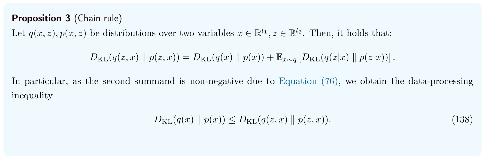
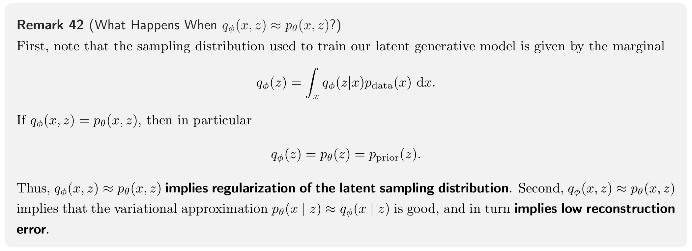
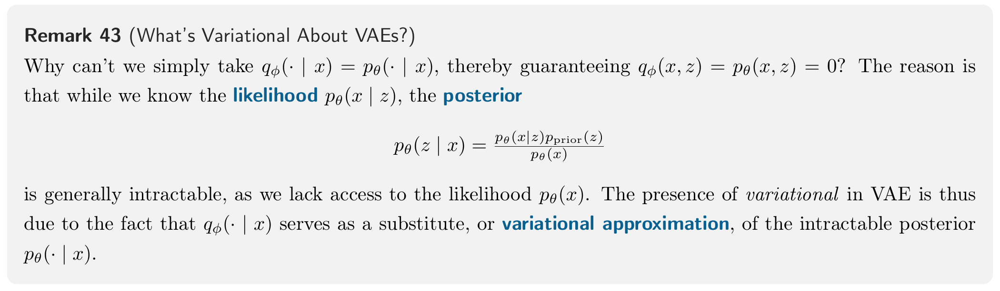
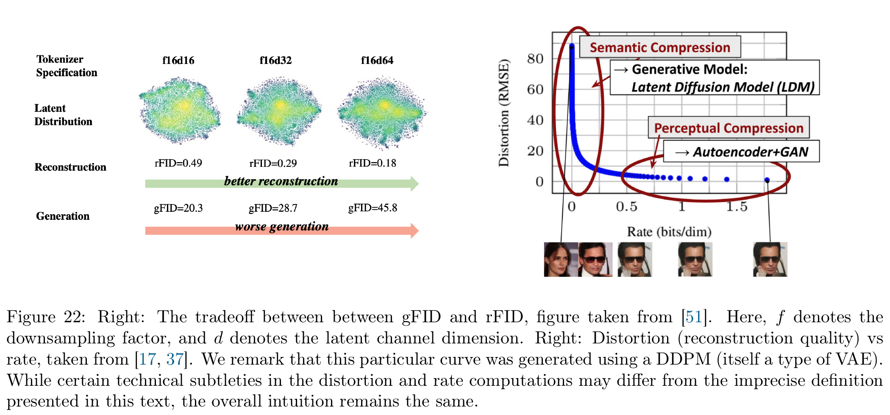

附录 D · 审阅稿
Additional Perspectives on VAEs：联合分布、ELBO 与变分推断
VAE 的损失为什么是“重建项加 KL”？它究竟在拟合什么分布？编码器输出的分布、真实后验和标准正态先验有什么区别？为什么已经有 VAE，还要在潜空间训练 Flow 或 Diffusion？讲义附录 D 把这些问题放进同一套概率论框架。
本篇是附录 D 的理论推导审阅稿。主线是：建立编码与生成两种联合分布 → 展开联合 KL → 用 KL 链式法则分别考察数据与潜变量 → 推导 ELBO → 用可精确计算的一维模型验证 → 解释变分推断、两阶段生成及 rate–distortion。核心推导、例子和原文核对均在本页。
阅读范围是讲义第 77–81 页，另含排版浮到第 82 页的 Figure 22。原文公式（132）–（145）、Proposition 3、Remark 42–43 和 Intuition 44 都有对应解释。补充推导不伪造原文编号；遇到原文的术语混用或过强结论，会先给出准确公式，再说明差别。正文先假设相关密度、KL 和熵有定义且有限，经验样本与连续密度的区别放在末节核对。
从两个联合分布出发，推导重建项与先验 KL
先固定符号：编码器不是先验，解码器定义的是条件分布
设原始数据 x∈RD，潜变量 z∈Rk。图像可以在程序中保留通道、高、宽，写成向量只是数学记法。编码器与解码器分别有参数 ϕ、θ，先验先固定为 p0(z)=N(0,Ik)。本文用 p0 简写讲义的 pprior，它不是生成时间为零的路径分布。
| 对象 | 它回答的问题 | 由谁决定 |
|---|---|---|
| pdata(x) | 真实数据整体怎样分布？ | 未知总体，训练集提供样本 |
| p0(z) | 还未观察 x 时，怎样随机选择潜变量？ | 模型设定的先验 |
| pθ(x∣z) | 给定潜变量，会生成哪些 x？ | 解码器 |
| qϕ(z∣x) | 观察一份 x 后，用哪份潜变量分布解释它？ | 编码器，作为近似后验 |
| pθ(z∣x) | 在当前生成模型下，观察 x 后的真实后验是什么？ | 由先验、解码器及 Bayes 公式共同确定 |
常见编码器输出两组数值 μϕ(x),ℓϕ(x)，其中 ℓ=logσ2。由此定义：
qϕ(z∣x)=N(μϕ(x),diag(eℓϕ(x))).
这不是两份潜变量，而是描述一份分布的均值和对数方差。解码器也先输出分布参数，例如：
pθ(x∣z)=N(gθ(z),τ2ID).
其中 gθ(z) 是解码均值，τ2 是本例暂时固定的观测方差。编码器的 σ2 描述潜变量分布，解码器的 τ2 描述给定潜变量后的数据分布，两者不共享含义或数值。
两种抽样顺序，形成两个联合分布
第一条路线从真实数据出发：先抽 x∼pdata，再用编码器抽 z∼qϕ(⋅∣x)。因此这对数值的联合分布是：
qϕ(x,z)=pdata(x)qϕ(z∣x).
第二条路线从先验出发：先抽 z∼p0，再用解码器抽 x∼pθ(⋅∣z)。因此：
pθ(x,z)=p0(z)pθ(x∣z).
同一对变量 (x,z)，可以由这两条路线产生。附录 D 的出发点是：让两条路线形成的联合分布尽量一致。这不仅比较 x 的边缘，也比较 z 的边缘，以及 x 与 z 怎样相关。
用联合 KL 表示差异，记：
J(ϕ,θ)=DKL(qϕ(x,z)∥pθ(x,z)).
KL 的定义是 DKL(q∥p)=Eq[logq−logp]。其方向不能交换：这里先按数据与编码器产生 (x,z)，再在这些样本上比较两种联合密度。
逐行展开联合 KL：为什么得到两项损失？
将两个联合分布的分解代入，所有期望都在 qϕ(x,z)=pdata(x)qϕ(z∣x) 下取：
J=Eqϕ(x,z)logpθ(x∣z)p0(z)pdata(x)qϕ(z∣x)=Eqlogpdata(x)+Eqlogp0(z)qϕ(z∣x)−Eqlogpθ(x∣z).(132)
第一项只依赖 x。对 z 的条件密度积分等于 1，所以：
C=Eqlogpdata(x)=Epdatalogpdata(x)=−H(pdata).(133)
数据分布不由 ϕ,θ 调整，因此 C 对训练参数是常数。连续情形这里的 H 是微分熵，可以为负；不能因为 J 非负，就认为附加常数后的所有损失也必非负。
第二项先固定 x，对 z∼qϕ(⋅∣x) 求期望，正是该图像编码分布到先验的 KL。再对所有数据平均：
R=Eqlogp0(z)qϕ(z∣x)=Epdata(x)DKL(qϕ(z∣x)∥p0(z)).(134)
第三项是解码器对真实 x 给出的负对数密度：
D=−Ex∼pdataz∼qϕ(⋅∣x)logpθ(x∣z).(135)
它要求从当前图像的编码分布抽出的 z，能够让解码器给当前图像较高的条件密度。对固定方差高斯解码器，这与平方重建误差相联系；一般情形应保留“负对数似然”这个含义。
因此，标准 VAE 目标为：
LVAE=R+D.(136)
它与联合 KL 的精确常数关系是：
LVAE=J−C=J+H(pdata).(137)
这解释了为什么最小化“重建项加先验 KL”等价于最小化联合分布差异。这里保留所有概率密度归一化常数，且先验 KL 的权重为 1。给 KL 额外乘 β=1，或加入感知、对抗损失后，优化目标就需要另外解释。
KL 链式法则：同一个联合差异可以从两侧拆开
Proposition 3 的完整证明
先不限制为 VAE。设 q、p 是同一对变量的两个联合分布，根据条件概率分解：
q(x,z)=q(x)q(z∣x),p(x,z)=p(x)p(z∣x).
把乘积的对数比拆成两项：
DKL(q(x,z)∥p(x,z))=∬q(x,z)logp(x)p(z∣x)q(x)q(z∣x)dzdx=∬q(x,z)logp(x)q(x)dzdx+∫q(x)[∫q(z∣x)logp(z∣x)q(z∣x)dz]dx=DKL(q(x)∥p(x))+Eq(x)DKL(q(z∣x)∥p(z∣x)).
最后一步第一项用 ∫q(x,z)dz=q(x)，第二项认出内层的条件 KL。由于条件 KL 非负：
DKL(q(x)∥p(x))≤DKL(q(x,z)∥p(x,z)).(138)
这就是“丢掉 z、只看 x，不会让两个分布的 KL 差异增大”。它是数据处理不等式在取边缘时的具体形式。等号成立，当且仅当 q(z∣x)=p(z∣x) 对 q(x) 几乎处处成立。

先保留 x：数据拟合误差，加近似后验误差
对编码联合分布，x 的边缘就是真实数据分布；对生成联合分布，x 的边缘是模型分布。代入链式法则：
J=KxDKL(pdata(x)∥pθ(x))+GxEpdata(x)DKL(qϕ(z∣x)∥pθ(z∣x)).
Kx 衡量模型生成的数据边缘是否准确；Gx 衡量编码器是否准确反推当前生成模型的潜变量后验。两个任务都属于联合匹配。由此得到讲义（139）：
LVAE=J+H(pdata)≥Kx+H(pdata).(139)
所以 VAE 优化的是数据边缘 KL 的一个带固定常数的上界，而不仅是逐样本压缩误差。若固定 θ，提高编码器的推断精度可以降低 Gx，即使 pθ(x) 完全没变，联合目标也会下降。
先保留 z：聚合后验匹配误差，加反向条件误差
将变量顺序交换，编码联合分布的 z 边缘是：
qϕ(z)=∫pdata(x)qϕ(z∣x)dx.
它叫聚合后验（aggregated posterior），是所有图像的编码分布按数据权重混合起来的结果。它不是单张图的 qϕ(z∣x)。生成联合分布的 z 边缘则固定为先验 p0(z)。
同一编码联合分布还诱导一个反向条件：
qϕ(x∣z)=qϕ(z)pdata(x)qϕ(z∣x),qϕ(z)>0.
这个条件是由联合分布定义的，不意味着我们另训练了一个叫 qϕ(x∣z) 的神经网络。链式分解变为：
J=KzDKL(qϕ(z)∥p0(z))+GzEqϕ(z)DKL(qϕ(x∣z)∥pθ(x∣z)).
因此有讲义（140）的潜变量边缘上界：
LVAE=J+H(pdata)≥Kz+H(pdata).(140)
而讲义（141）写出的差距精确等于：
J−DKL(qϕ(z)∥p0(z))=Gz=Eqϕ(z)DKL(qϕ(x∣z)∥pθ(x∣z)).(141)
这两种差距不能混用：Gx=0 要求编码器等于真实后验；Gz=0 要求两种 x 条件分布一致。讲义把相关差距统称 amortization gap 的说法过宽。严格的推断差距与摊销差距会在后文区分。
另外，上界下降不保证某一个下方分量在每次更新时都下降。例如 Kx 从 1 增到 1.5，Gx 从 9 降到 0.5，总和 J 仍从 10 降到 2。这种数值关系说明逻辑上的可能性，并不是某次实验记录。可靠结论是：若 J 趋于零，两个非负边缘 KL 都必须趋于零。
VAE 为什么能生成？联合匹配又不能保证什么？
先验采样与模型分布，是一条精确的概率定义
给定先验和解码器，生成过程为：
Z∼p0,X∼pθ(⋅∣Z).
按全概率公式，其输出边缘就是：
pθ(x)=∫pθ(x∣z)p0(z)dz.
只要能正确抽取这两步，输出就服从模型分布 pθ(x)。这里不需要近似后验参与生成；近似来自模型分布对真实数据分布的拟合，而非“先验加解码器”这条抽样定义本身。若实际输出解码均值 gθ(z)，而没有从解码分布随机采样，则输出分布会改成先验经均值映射的推前分布，需要与随机解码版本区分。
当 J=0，两份联合分布相同，因而数据边缘 pθ(x)=pdata(x)，潜变量边缘 qϕ(z)=p0(z)，相应条件也几乎处处一致。这确实是一个生成分布正确的理想状态。
反例：联合分布完全一致，重建仍然可以不记得输入
“生成分布正确”与“每份输入都能被准确还原”是不同要求。考虑一个完全可算的例子：
pdata(x)=N(0,1),p0(z)=N(0,1),
qϕ(z∣x)=p0(z),pθ(x∣z)=pdata(x).
编码器不依赖输入，解码器不依赖潜变量。两个联合分布都是独立乘积：
qϕ(x,z)=pdata(x)p0(z)=pθ(x,z),J=0.
但重建时，输入 X 与随机解码得到的 X′ 是两个独立标准正态。于是：
E[(X−X′)2]=E[X2]+E[(X′)2]−2E[XX′]=1+1−0=2.
若取解码均值，所有输入都重建为 0，均方误差是 E[X2]=1。潜变量没有保存输入信息，但整体生成分布完全准确。这个例子说明，联合匹配、似然最优、后验精确，都不单独保证有用的潜表示或低逐样本重建误差。

更准确的说法是：联合匹配保证概率模型的一致性；要准确恢复某个具体输入，还需要编码携带足够信息，且给定潜变量后输入的不确定性足够小。实际图像压缩系统的重建项、网络能力和其他约束会影响这一点。
这也能直接从重建项看出来。在相关条件熵有限时，乘除 qϕ(x∣z)，得到：
D=Hq(X∣Z)−Eqlogqϕ(x∣z)+GzEqϕ(z)DKL(qϕ(x∣z)∥pθ(x∣z)).
匹配条件分布消除的是 Gz，并不自动消除给定 Z 后输入仍有的不确定性。若联合完全匹配、随机解码与原输入在给定 Z 后条件独立，且二阶矩有限，则：
E∥X−X′∥2=2EZtrCov(X∣Z).
若改用正确的条件均值重建，均方误差则是右侧的一半。因此要有小配对 MSE，还需要平均条件方差小；联合分布相等本身没有提供这一额外条件。
从 Bayes 公式到 ELBO：下界、间隙与训练目标
为什么不直接最大化数据的对数似然？
我们希望提高训练数据在模型下的概率密度，即最大化 Epdatalogpθ(x)。但：
pθ(x)=∫pθ(x∣z)p0(z)dz.
当解码器是复杂的非线性神经网络，这个高维积分一般难以精确计算。知道任意一对 (x,z) 的 pθ(x∣z)，不等于知道对全部 z 积分后的 pθ(x)。由 Bayes 公式，真实后验同样包含这个难算的归一化因子：
pθ(z∣x)=pθ(x)pθ(x∣z)p0(z).
因此引入可计算、可抽样的 qϕ(z∣x)，用它构造一个不需要求出 pθ(x) 的优化目标。
推导一：从两个后验之间的 KL 得到精确恒等式
固定一份观测 x。用 Bayes 公式替换分母，有：
Eqϕ(z∣x)logpθ(x∣z)p0(z)qϕ(z∣x)=Eqlogpθ(z∣x)pθ(x)qϕ(z∣x)=DKL(qϕ(z∣x)∥pθ(z∣x))−logpθ(x).(142)
定义：
E(x;ϕ,θ)=Eqϕ(z∣x)logqϕ(z∣x)pθ(x∣z)p0(z)=Eqlogpθ(x∣z)−DKL(qϕ(z∣x)∥p0(z)).
把（142）移项：
logpθ(x)=E(x;ϕ,θ)+DKL(qϕ(z∣x)∥pθ(z∣x)).(143)
因为右侧第二项非负：
E(x;ϕ,θ)≤logpθ(x).(144)
E 就是 evidence lower bound，简称 ELBO。Evidence 指观测数据的边缘似然 pθ(x)，常用其对数讨论下界。
式（143）还精确回答了“下界差多少”：差距是编码后验与真实后验的 KL。固定 θ 时，改进编码器只会收紧下界，并不会改变真实 logpθ(x)。当两套网络同时变化时，似然本身和下界间隙都在变化，所以 ELBO 增加不保证每次参数更新都让真实似然增加同样的量。
推导二：为什么把 log 移进期望会得到下界？
在 q 覆盖相关模型支持集的条件下，例如常见的全支持非退化高斯 q，可以把同一个积分写成：
logpθ(x)=log∫qϕ(z∣x)qϕ(z∣x)pθ(x,z)dz=logEq[qϕ(z∣x)pθ(x,z)].
log 是凹函数，Jensen 不等式给出 logE[W]≥E[logW]，于是：
logpθ(x)≥Eqlogqϕ(z∣x)pθ(x,z)=E(x;ϕ,θ).
取等时，权重 pθ(x,z)/qϕ(z∣x) 在 q 下几乎处处为常数。它的积分为 pθ(x)，所以常数正是 evidence，由此得到 qϕ(z∣x)=pθ(z∣x)。这与 KL 推导的取等条件一致。
负 ELBO 与重建加 KL，是完全相同的目标吗？
对固定 x，定义重建 NLL 与先验 KL：
Dx=−Eqlogpθ(x∣z),Rx=DKL(qϕ(z∣x)∥p0(z)).
根据定义，−E(x)=Dx+Rx。再对真实数据取期望：
LVAE=−Epdata(x)E(x;ϕ,θ)=D+R.(145)
这里保留所有归一化常数，所以是精确相等；若实现中丢掉固定高斯常数，才会写“相差一个参数无关常数”。联合 KL 视角与 ELBO 视角也可以合并为：
J=−EpdataE(x)−H(pdata)=Kx+Gx.
注意两种 KL 的任务不同：损失中能直接计算的 KL 是到先验的 Rx；下界与 evidence 之间的间隙是到真实后验的 KL。VAE 正是通过可计算的重建项和先验项，间接优化了难以直接计算的似然与后验误差。
用线性高斯模型，把边缘似然、后验、ELBO 和梯度全部算出来
先推导通常代码里计算的两项
对 pθ(x∣z)=N(gθ(z),τ2ID)，取负对数得到：
−logpθ(x∣z)=2Dlog(2πτ2)+2τ2∥x−gθ(z)∥2.
因此，当 τ2 固定时，优化重建 NLL 等价于优化带系数的平方误差。若 τ2 也学习，2Dlogτ2 就不再是常数；不能只保留误差分母而丢掉这一项。二元数据选 Bernoulli 似然时则会产生另一种重建交叉熵，MSE 不是 VAE 定义本身。
再看一维高斯编码 q=N(m,s2) 到标准正态的 KL：
DKL(q∥N(0,1))=Eq[−logs−2s2(Z−m)2+2Z2]=−logs−21+2m2+s2=21(m2+s2−1−logs2).
第二行使用 E[(Z−m)2]=s2、E[Z2]=m2+s2。对角高斯密度按维分解，对数变成求和，所以一般形式是：
Rx=21j=1∑k[μj(x)2+eℓj(x)−1−ℓj(x)].
这些都是条件在某份 x 下的分布参数。把方差 eℓ 直接乘高斯噪声会用错尺度；采样要用标准差 eℓ/2。
一个无需数值积分的完整模型
下面固定解码器模型：
Z∼N(0,1),X∣Z=z∼N(az,τ2).
等价地，X=aZ+η，其中 η∼N(0,τ2) 与 Z 独立。因此：
pθ(x)=N(0,a2+τ2),−logpθ(x)=21log[2π(a2+τ2)]+2(a2+τ2)x2.
后验用 Bayes 公式配平方。与 z 无关的项暂记为常数：
logpθ(z∣x)=const−2z2−2τ2(x−az)2=const−21[(1+τ2a2)z2−τ22axz]=const−2τ2a2+τ2(z−a2+τ2ax)2.
读出真实后验：
pθ(z∣x)=N(μ∗,v∗),μ∗=a2+τ2ax,v∗=a2+τ2τ2.
取近似后验 q(z∣x)=N(m,s2)。它的期望重建 NLL 为：
Dx=21log(2πτ2)+2τ2(x−am)2+a2s2.
其中用到 E[(x−aZ)2]=(x−am)2+a2s2。即使解码均值 am=x，编码采样仍会因方差 s2 带来额外平均误差。
所以这个模型的精确负 ELBO 是：
F(m,s)=Dx21log(2πτ2)+2τ2(x−am)2+a2s2+Rx21(m2+s2−1−logs2).
数值核验：先验 KL 非零，ELBO 仍然可以取等
令 a=2,τ2=1,x=3，于是模型边缘为 N(0,5)，真实后验为 N(1.2,0.2)。比较一份不精确近似 q=N(1,0.25) 与真实后验：
| 量，使用自然对数 | q=N(1,0.25) | q=N(1.2,0.2) |
|---|---|---|
| 期望重建 NLL Dx | 1.918939 | 1.498939 |
| 到先验的 KL Rx | 0.818147 | 1.124719 |
| 负 ELBO，F=Dx+Rx | 2.737086 | 2.623657 |
| logpθ(3) | −2.623657 | −2.623657 |
| ELBO，−F | −2.737086 | −2.623657 |
| 到真实后验的 KL | 0.113428 | 0 |
第一列满足 2.737086≈2.623657+0.113428，即：
−E(x)=−logpθ(x)+DKL(q(z∣x)∥pθ(z∣x)).
第二列的下界取等，但先验 KL 是 1.124719，并不为零。与第一列相比，它的先验 KL 甚至更大，只是重建项改善得更多，总负 ELBO 更小。ELBO 取等需要匹配真实后验，不需要把每张图的编码分布都压成标准正态。若在本例直接令 q 等于先验，先验 KL 虽为零，负 ELBO 却变成 7.418939。
对负 ELBO 求导，能否直接找到真实后验？
固定解码器的 a、τ 和观测 x，只优化 m 与 ℓ=logs2。对上式求导：
∂m∂F=(1+τ2a2)m−τ2ax,∂ℓ∂F=21[(1+τ2a2)eℓ−1].
令两个导数为零，得到：
m∗=a2+τ2ax,eℓ∗=s∗2=a2+τ2τ2.
它们恰好是真实后验的均值与方差。并且：
∂m2∂2F=1+τ2a2>0,∂ℓ2∂2F=21(1+τ2a2)eℓ>0.
这个固定模型的目标在 (m,ℓ) 上可分离且严格凸，因此上述点是唯一全局极小值。这只是可解线性高斯例子的性质，不能推广为一般神经网络 VAE 的目标都凸。
本例从 m=1、s2=0.25 开始，两个梯度为 −1 和 0.125。梯度下降把均值往上推、把对数方差往下调，方向正好朝向 m∗=1.2,s∗2=0.2。
重参数化：抽样还在，怎样让梯度穿过编码器？
一般神经网络里，重建期望不能解析积分。我们改写采样：
ϵ∼N(0,I),Z=μϕ(x)+eℓϕ(x)/2⊙ϵ.
这样 Z 的分布不变；但随机源的分布不再依赖编码器参数。固定本次抽到的 ϵ，Z 对均值、对数方差是可微函数：
∂μj∂Zj=1,∂ℓj∂Zj=21eℓj/2ϵj.
重建误差因此可以沿“解码器 → Z → 均值与方差 → 编码器参数”反传。在允许交换求导与期望的正则条件下，这种路径梯度的抽样平均等于真实目标梯度。
在线性高斯例子中，单次噪声产生的估计为：
F(ϵ)=21log(2πτ2)+2τ2[x−a(m+sϵ)]2+21(m2+s2−1−logs2).
其对 m 的梯度是：
∂m∂F=τ2a[a(m+sϵ)−x]+m.
对 ϵ 取期望，使用 Eϵ=0，就回到前面的 ∂F/∂m。对 s 的梯度为：
∂s∂F=τ2aϵ[a(m+sϵ)−x]+s−s1.
再用 Eϵ2=1，也得到精确期望梯度 (1+a2/τ2)s−1/s。单次梯度可以与期望方向不同，无偏性说的是重复抽样后的平均。
若实际优化的是对数方差 ℓ=logs2，还要接上链式法则：
∂ℓ∂F=2s∂s∂F.
还有一个容易忽略的区别：ELBO 本身是期望形式的下界，但其单次 Monte Carlo 估计不必仍是下界。本例取 m=1、s=0.5、ϵ=0.2，有 z=1.1，单样本负 ELBO 估计约为 2.057086，低于真实边缘 NLL 2.623657；而期望负 ELBO 是 2.737086。随机估计偶尔越过 evidence，不违反期望下界关系。
“变分”与“摊销”分别指什么？
变分近似：在可计算的分布族里寻找后验
真实后验通常难算，所以先选一个便于抽样和计算密度的分布族 Q，例如所有对角高斯，再寻找其中最接近真实后验的分布。固定 θ,x，最大化 ELBO 等价于：
qx∗∈argq∈QminDKL(q(z)∥pθ(z∣x)).
优化对象在概念上是一份分布，这就是变分推断的含义。有限维参数化让它在计算中变成均值、方差等参数的优化。对角高斯不能一般地表达有多个峰、弯曲相关结构的真实后验，因此即使这个族内优化完全成功，也可能留下误差。
若每读一张新图都单独优化其变分参数，推断会很慢。VAE 改用共享编码器：直接从 x 预测这组参数，用跨样本共享的训练成本换取一次前向推断。这叫摊销推断（amortized inference）。
推断差距 = 分布族近似差距 + 摊销差距
固定生成模型 θ，用 Ex(q) 表示选择分布 q 时的 ELBO。假设最优 qx∗ 存在，则：
logpθ(x)−Ex(qϕ)=approximation gaplogpθ(x)−Ex(qx∗)+amortization gapEx(qx∗)−Ex(qϕ).
左边是总推断差距，等于 DKL(qϕ(z∣x)∥pθ(z∣x))。第一项表示变分分布族本身的能力限制；第二项比较共享编码器输出与每个样本各自优化的族内最优结果。这个分解遵循 Cremer 等（2018）的 Table 1。
扩大分布族可能减小第一项，改进编码器、训练或做额外局部优化可能减小第二项。固定生成模型时，更换变分族会改变族内最优近似，不改变真实后验；重新训练生成模型则还可能改变真实后验，不能把不同实验中的变化都归因于同一种差距。在实际测量中，无法精确求得族内最优时，局部优化不充分还会影响差距的估计。
线性高斯例子中，真实后验就在高斯族内，所以近似差距为零。若编码器能输出 m(x)=ax/(a2+τ2) 及固定方差 τ2/(a2+τ2)，摊销差距也可以为零。但此时数据边缘 pθ(x) 是否拟合真实数据，仍然取决于生成模型参数。

具体地，即使对所有数据都有 qϕ(z∣x)=pθ(z∣x)，也只是 Gx=0。链式法则仍给出 J=Kx，只有模型数据边缘也正确时，联合 KL 才为零。
重建、直接 VAE 生成、潜空间生成，是三条不同路线
先写清楚三个 sampler 的输出分布
重建 sampler：从真实数据抽输入，再编码、解码。设输出变量为 x′，则：
prec(x′)=∬pdata(x)qϕ(z∣x)pθ(x′∣z)dxdz=∫pθ(x′∣z)qϕ(z)dz.
直接 VAE sampler：从先验抽 z，再解码：
pθ(x′)=∫pθ(x′∣z)p0(z)dz.
潜空间生成 sampler：冻结自动编码器，训练另一个模型 rψ(z) 去拟合实际编码数据的聚合分布，再解码：
pgen(x′)=∫pθ(x′∣z)rψ(z)dz.
这解释了讲义为何在已经有 VAE 后仍训练 Flow/Diffusion：训练图片提供的潜变量总体来自 qϕ(z)，它未必等于简单先验；一个额外生成器可以专门学习这份分布，让自动编码器优先承担重建与压缩任务。这是模型能力、重建要求与计算成本共同决定的设计，而不是 VAE 无法独立生成。
也不能从“J 没降到零”直接推断 qϕ(z)=p0(z)。因为 J=Kz+Gz，完全可能 Kz=0 而 Gz>0。聚合后验与先验的不匹配是实践中需要检查的可能性，不是联合 KL 非零的逻辑必然结果。
rFID 与 gFID 比较的是分布，重建误差比较的是配对样本
讲义用 rFID 比较重建 sampler 的输出分布与真实数据，用 gFID 比较潜空间生成 sampler 的输出分布与真实数据。FID 会把样本送进固定特征网络，用特征均值与协方差计算分布差异；它不使用某份输入与其重建之间的配对关系。
若两组特征的均值、协方差分别为 (m1,C1),(m2,C2)，其总体 FID 形式是：
FID=∥m1−m2∥2+tr[C1+C2−2(C11/2C2C11/2)1/2].
这里的平方根是正半定矩阵平方根。实际 FID 用有限样本估计这些统计量，因此还存在估计噪声。即使总体 FID 为零，也主要说明这些特征的一、二阶统计一致，不能据此推出一般分布完全相同。
逐样本重建均方误差则是：
MSErec=EX∼pdataZ∼qϕ(⋅∣X), X′∼pθ(⋅∣Z)∥X−X′∥2.
它使用同一次编码—解码的输入输出配对。若采用解码均值，需把 X' 换成 gθ(Z)。对从随机噪声生成的新样本，没有天然配对的“正确训练图片”，所以不能以同样方式报告逐样本生成 MSE。
前面的独立重建反例提供一个直接检验：重建输出分布完全等于数据分布，因此总体 rFID 为零，但随机重建 MSE 为 2。低 rFID 不保证保留了每份输入的信息。它与低配对失真不能相互替代。
若潜空间模型完全学会聚合后验，会发生什么？
如果 rψ(z)=qϕ(z)，把它代入上面的积分：
pgen(x′)=∫pθ(x′∣z)qϕ(z)dz=prec(x′).
因此，在同一解码规则和同一特征网络下，两个 sampler 的总体 rFID 与 gFID 相同。有限样本估计会有波动。两条路线的输入输出配对仍不同，但它们的输出边缘一致。
还能给出一个生成器误差不会被同一解码随机核放大的 KL 结论。对 rψ(z)pθ(x∣z) 与 qϕ(z)pθ(x∣z) 应用链式法则和取边缘不等式：
DKL(pgen∥prec)≤DKL(rψ∥qϕ),
前提是相关 KL 有定义。这个界比较生成输出与重建输出，不是对真实数据的 FID 保证；KL 的方向也不能随意交换。实际中 latent 生成器有限容量、训练未充分及数值采样误差，都可能使两种输出分布不同。
Rate–Distortion：压缩、信息保留与生成任务怎样分工？
正式的 rate 为什么不是“聚合后验有多像先验”？
讲义在第 81 页给了一个直觉性 rate 描述。为避免混淆，这里采用 VAE 信息论分析中的定义：
R=Epdata(x)DKL(qϕ(z∣x)∥p0(z)).
在对数比中乘除聚合后验 qϕ(z)：
R=Eqϕ(x,z)logqϕ(z)qϕ(z∣x)+Eqϕ(x,z)logp0(z)qϕ(z)=Iq(X;Z)DKL(qϕ(x,z)∥pdata(x)qϕ(z))+KzDKL(qϕ(z)∥p0(z)).
第一项是互信息，衡量编码潜变量与输入的统计依赖；第二项是聚合后验与先验的失配。于是：
R=Iq(X;Z)+Kz,Iq(X;Z)≤R.
这说明“对每张图施加先验 KL”同时涉及保留多少输入信息、整体潜分布偏离先验多少。它既不是单纯的 Kz，也不是潜变量的维数或文件字节数。自然对数下单位为 nats；除以 log2 才换成 bits。在适当编码条件下 R 有编码率解释，但不能不加条件地把它当作某个压缩文件的实际长度。
如果每份输入的 qϕ(z∣x) 都等于同一先验，R=0 且互信息为零，编码没有携带输入信息。但如果仅仅 qϕ(z)=p0(z)，互信息不必为零，因为不同输入仍可能占据先验的不同部分。
一个可算例子：X∼N(0,1)，令 q(z∣x)=N(ρx,1−ρ2)，∣ρ∣<1。聚合后验仍为标准正态，而：
R=Iq(X;Z)=−21log(1−ρ2),Kz=0.
例如 ρ=0.8，互信息约为 0.510826 nats。反过来，若所有输入都编码成同一个偏移高斯 N(10,1)，则 R=50，却仍没有输入信息。R 是信息保留的上界和综合代价，不是“R 高就一定有用”的保证。
为什么会写成失真加 β 倍 rate？
令 D=−Eqlogpθ(x∣z)，标准 VAE 最小化 D+R。工程上常改为：
Lβ=D+βR.
也可以把它看作受约束问题的 Lagrange 形式：希望降低失真，同时要求 R≤R0，其拉格朗日目标为 D+β(R−R0)，β≥0。对固定 R0，去掉常数 −βR0 就得到上式。非凸神经网络训练不保证所有前沿点都能通过调一个 β 找到。
在最优可达的 rate–distortion 曲线上，允许更大的 rate 预算不会让最优失真变差，因为可选择的模型集合扩大了。但某次实际训练的 R 更大，并不保证其失真更小；优化程度、模型能力及 R 中的失配成分都可能影响结果。
固定方差高斯下，D 与 MSE 只差系数和常数。若代码对像素误差求平均，而对 latent KL 求和，就改变了两项相对尺度；不能只比较 β 的数值。β=1 在正确 NLL 标度下对应标准负 ELBO；任意 β 的目标不能直接继续叫同一个模型的标准负 ELBO。
Figure 22：怎样读经验权衡与“拐点”？

左面板固定下采样因子 f=16，并在固定扩散模型训练计算预算下比较 latent 通道数 d=16、32、64；这里 d 不是本文的数据维度 D。对应 rFID 从 0.49 降到 0.29、0.18，重建分布指标改善；gFID 却从 20.3 升到 28.7、45.8，该实验中的生成指标变差。中间的点云是潜变量分布的可视化，不能仅凭点云外观证明其全部建模复杂度。这些结果展示特定实验下的权衡，不能读成对所有模型都成立的单调定理。
右面板横轴是 rate，单位 bits/dim，纵轴是失真 RMSE。与总 nats 形式的 R 比较时，还涉及换算为 bits 及按维度归一化。图把较平缓区域标为自动编码器承担的感知压缩，把陡峭区域标为生成模型承担的语义压缩，表达的是建模分工，不是一条生成样本随时间运动的轨迹。讲义注明这条曲线来自把 DDPM 看作一种潜变量模型的分析，具体 rate 与 distortion 定义应按来源理解，不应把其数值直接移植为某个图像 VAE 的 KL 或 MSE。
Intuition 44 提醒寻找 Pareto 前沿的“拐点”：从低 rate 一侧略微增加 rate，失真可能显著下降；越过某一区域后，增加更多表示成本只换来较小改善。这样的工作点可能同时保持合理重建质量、减轻后续 latent 模型的负担，但“最佳拐点”依赖任务、计算预算及评价指标，没有一个对所有系统通用的最优压缩率。
还要谨慎理解“潜分布更简单”：先验失配 Kz 小，不等于任意网络都容易拟合；保留更少信息也不必使某一次训练的 gFID 下降。这些经验关系需要实际实验支持。自动编码器与潜空间模型的分工，应同时检查配对重建、输出分布质量和潜空间建模误差。
审阅核对：原文表述、数学假设与关键等式
哪些是原文结论，哪些需要澄清？
| 原文位置 | 需要区分的地方 | 本文采用的准确说法 |
|---|---|---|
| 第 78 页，VAE 生成 | 模型采样与数据拟合的近似 | 先验加条件解码正确采样模型分布；模型分布与真实数据的接近程度由学习决定。 |
| 第 79 页，式（139）–（141）的 gap | 按 x 和按 z 取边缘的剩余项不同 | 分别为 Gx、Gz，对应不同条件分布匹配；严格摊销差距只是推断差距的组成部分。 |
| 第 79 页，未充分最小化与 latent 失配 | 联合 KL 非零不强制某个边缘 KL 非零 | 只能由非负分解得到边缘上界，不能从上界未达零反推各下方项都非零。 |
| 第 80 页，Remark 42 | 联合匹配与逐样本重建 | 联合匹配保证分布一致性；输入和随机重建可以独立，不能单独推出小 MSE。 |
| 第 80 页，Remark 43 | “联合分布等于零”及后验匹配的推论 | 分布不能整体等于零；后验匹配只消除 Gx，数据边缘正确时 J 才也为零。 |
| 第 81 页，rFID 与 rate 的直觉 | 边缘质量、配对信息与平均 KL | rFID 不检查输入输出配对；R 是互信息加聚合失配，不只是整体像不像先验。 |
| 第 81–82 页，重建—生成权衡 | 经验图与普遍定理 | 有限能力系统可有权衡；若 latent 生成器精确匹配聚合后验，两种输出边缘一致。 |
连续密度推导与有限训练集，怎样对应？
上面的联合 KL、微分熵分解假设分布有共同的参考测度，且相关对数比可积、KL 有限；条件分布相等的结论均理解为相应边缘下几乎处处相等。若 q 在 p 为零处有正概率，KL 可为无穷大，不能随意做“无穷减无穷”的常数移项。
特别地，如果把有限训练集严格写成 pN=N1∑iδxi，而解码模型在 x 上有连续密度，则这个离散经验分布不绝对连续于连续模型分布，相应联合 KL 通常为无穷大。不能把 logpN(xi)=log(1/N) 当成连续密度直接代入前面的有限熵推导。
实际训练不需要这么做。我们使用逐样本 ELBO 的有限平均：
L=N1i=1∑N[−Eqϕ(z∣xi)logpθ(xi∣z)+DKL(qϕ(z∣xi)∥p0)].
每个 xi 的 ELBO 恒等式仍可成立，样本平均用来近似总体学习目标。对于离散像素或 token，亦可选一致的离散似然与计数测度；对像素去量化则是在定义另一份连续建模对象。共同点是避免把概率质量与概率密度混作同一个比值。
最后把整篇的对象放在同一张表里
| 量 | 定义 | 应当记住的关系 |
|---|---|---|
| 联合差异 J | DKL(qϕ(x,z)∥pθ(x,z)) | J=Kx+Gx=Kz+Gz |
| 先验代价 R | ExDKL(qϕ(z∣x)∥p0) | R=Iq(X;Z)+Kz |
| 重建 NLL D | −Eqlogpθ(x∣z) | 固定方差高斯时对应带权 MSE 加常数 |
| 标准 VAE 目标 | D+R | −ExE(x)=J+H(pdata) |
| 逐样本 ELBO 间隙 | logpθ(x)−E(x) | 到真实后验的 KL，与到先验的 KL 不同 |
| 潜空间生成器 | rψ(z)≈qϕ(z) | 拟合实际编码总体，再经同一解码器产生新数据 |
审阅时可以用三个问题检验理解：ELBO 取等是否要求先验 KL 为零？不要求，线性高斯例子已经展示。两个联合分布相等是否必然精确重建原输入？不必，独立编码—解码反例已经展示。聚合后验等于先验是否意味着 latent 不含输入信息？不意味着，相关高斯例子仍有正互信息。
出处与补充推导范围
主来源是 Holderrieth 与 Erives 的 MIT 6.S184 讲义附录 D，包括第 77–81 页正文及第 82 页 Figure 22。本文保留公式（132）–（145）与原文框，积分展开、线性高斯手算、独立重建反例、两种边缘 gap 的区分和抽样估计核验是阅读补充。
ELBO 与重参数化可对照 Kingma、Welling 的 Auto-Encoding Variational Bayes 第 2 节；推断、近似与摊销差距的术语对照 Inference Suboptimality in Variational Autoencoders 的 Table 1；rate–distortion 与表示学习的区分可读 Fixing a Broken ELBO。
FID 的分布统计定义来自 Heusel 等关于 FID 的原论文；讲义 Figure 22 左面板所引的重建—生成实验来自 Reconstruction vs. Generation: Taming Optimization Dilemma in Latent Diffusion Models。实验曲线与本文概率恒等式分开理解；这些链接是出处，核心推导在本页已完整展开。
References
[1] Peter Holderrieth and Ezra Erives. An Introduction to Flow Matching and Diffusion Models. MIT 6.S184: Generative AI With Stochastic Differential Equations, 2026.
相关内容：附录 D Additional Perspectives on VAEs，原文第 77–81 页及第 82 页 Figure 22。原文 Proposition 3、Remark 42/43 和 Figure 22 保留原样截图，理论及排版问题在正文明确勘误。